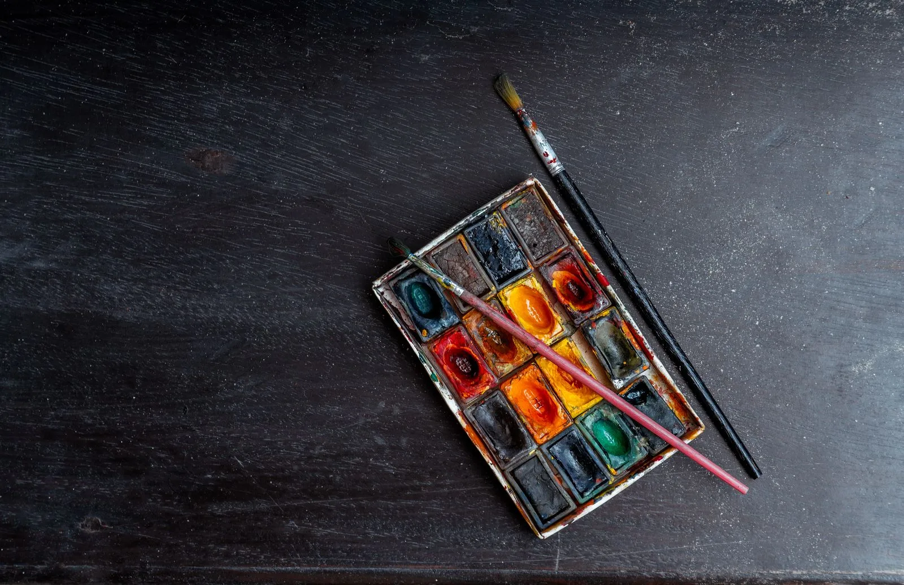

Bộ đồ tối thiểu để bắt đầu vẽ màu nước
Tác giả: Ruler
Chuyên mục: Bắt đầu từ số 0 — Cập nhật: 23/11/2026
Lần đầu bước vào cửa hàng họa cụ, nhiều người mới bị choáng. Kệ giấy cao ngang người, kệ màu có hàng chục hộp na ná nhau, kệ cọ thì đủ cỡ đủ lông, giá chênh nhau rất xa. Cảm giác chung là sợ mua thiếu thì vẽ không được, mà mua thừa thì tốn tiền rồi bỏ xó. Bài này giúp bạn tránh cả hai nỗi sợ đó: chỉ mua đúng những món thật sự cần trong tháng đầu, mua theo thứ tự ưu tiên, và biết món nào có thể đợi sau.
Nguyên tắc xuyên suốt bài này rất đơn giản: giấy là khoản đáng tiền nhất, màu là khoản học pha màu, cọ chỉ cần ít mà đúng. Nếu bạn chỉ nhớ một câu thì hãy nhớ câu này: giấy tốt cứu được người mới, giấy mỏng thì dù cọ đắt cũng khó cứu.

Ảnh minh họa: ảnh stock của Inna Rabotyagina trên Pexels (giấy phép Pexels, dùng thương mại được) — không phải đồ vẽ của Ruler, chỉ minh họa bộ đồ tối thiểu.
Vì sao giấy nên được mua trước tiên
Màu nước khác màu sáp hay màu acrylic ở một điểm: nước là thứ mang màu đi trên giấy. Nhiều người mới tưởng mình vẽ kém khi tờ giấy cứ nhăn lại lúc gặp nước, trong khi nguyên nhân nằm ở loại giấy: giấy mỏng, giấy in văn phòng hay giấy vẽ chì thông thường không chịu được nước, gặp nước sẽ nhăn, phồng rộp và có thể rách. Mỹ thuật Bụi khuyên chọn giấy chuyên dụng cho màu nước, tối thiểu 200 gsm, lý tưởng từ 300 gsm trở lên.
Jackson's Art, trong bài hướng dẫn cho người mới, cũng đặt giấy lên trước và khuyên người mới đầu tư vào giấy tốt. Trang này còn lưu ý rằng màu học sinh có nồng độ sắc tố thấp hơn màu chuyên nghiệp, vì sắc tố là thành phần đắt nhất, nên một bộ màu học sinh giá vừa phải vẫn đủ để bắt đầu. Nói cách khác, tiền nên dồn cho giấy trước, màu và cọ có thể bắt đầu ở mức vừa phải.
Vậy mua giấy nào cho lần đầu? Hãy tìm đúng ba chữ trên nhãn: giấy màu nước, 300 gsm, cold press. Con số 300 gsm tương đương 140 lb theo cách ghi của hãng Winsor & Newton cho giấy Professional của họ; Cass Art cũng ghi giấy Professional của hãng này là 300 g/m² tương đương 140 lb. Cold press nghĩa là bề mặt hơi nhám, giữ nước tốt và dễ kiểm soát độ loang hơn bề mặt trơn. Cả Mỹ thuật Bụi và PM Art & Crafts đều khuyên người mới chọn cold press vì lý do này. Khổ giấy nên chọn nhỏ, cỡ A5 hoặc nhỏ hơn, dạng block dán bốn cạnh hoặc sổ gáy keo. Block dán bốn cạnh giữ giấy phẳng khi ướt, bạn không cần căng giấy trước. Sổ nhỏ còn có lợi khác: bạn đỡ tiếc giấy, dám thử, dám vẽ hỏng. Một tờ A4 trắng tinh thường làm người mới chùn tay hơn một tờ nhỏ.
Bạn không cần mua giấy 100% cotton ngay từ buổi đầu nếu ngân sách eo hẹp. Giấy cellulose tốt, định lượng 300 gsm, vẫn đủ để tập loang màu, tập wash (tô một lớp màu mỏng đều lên một diện tích lớn) và tập chồng lớp cơ bản. Khi nào bạn đã vẽ đều tay và muốn màu trong hơn, khô chậm hơn, hãy thử giấy cotton sau. Cách chọn chi tiết giữa cotton và cellulose, giữa hot press, cold press và rough, được viết đầy đủ ở bài chọn giấy và cọ của website này, bạn chỉ cần đọc bài đó khi chuẩn bị mua giấy lần hai.
Màu nước: hộp nén nhỏ là đủ, học pha quan trọng hơn mua nhiều màu
Màu nước có hai dạng chính: dạng nén khô trong khay gọi là pan, và dạng tuýp mềm. Pan tiện mang theo, dễ lấy từng chút màu, khó lấy quá tay. Tuýp tiện khi cần pha mảng lớn, nhưng người mới rất dễ bóp ra quá nhiều rồi tiếc mà cố dùng hết. Vì vậy, lần đầu nên chọn hộp pan.
Jackson's Art khuyên người mới chọn một bộ pan, vì pan giúp bạn lấy màu nhẹ và chồng lớp dần, trong khi tuýp có nguy cơ lấy quá nhiều màu ngay từ đầu. Bài viết này cũng cho biết một bộ tám màu đã đủ để bắt đầu vẽ nhiều chủ đề. Mỹ thuật Bụi khuyên chọn hộp pan từ 12 đến 24 màu của hãng phổ thông, ưu tiên độ ổn định màu và dễ pha hơn số lượng màu nhiều. PM Art & Crafts cũng ghi giấy nên chọn 200 đến 300 gsm và màu có thể dùng dạng tuýp hoặc dạng bánh, cọ tròn cỡ 4 đến 8 phù hợp để luyện tập.
Ba nguồn trên không thống nhất một con số duy nhất, và đó là điều bình thường: số màu trong hộp không quyết định bạn vẽ được hay không. Điều quyết định là bạn có chịu pha màu hay không. Vì vậy, gợi ý thực hành của bài này là: mua hộp pan 12 màu học sinh, nhưng trong tuần đầu chỉ dùng sáu màu chính để pha. Sáu màu đó gồm một vàng ấm và một vàng lạnh, một đỏ ấm và một đỏ lạnh, một xanh dương ấm và một xanh dương lạnh. Ví dụ bạn có thể chọn vàng chanh và vàng đất, đỏ son và đỏ hồng, xanh ultramarine và xanh cerulean. Tên gọi có thể khác nhau tùy hãng, bạn chỉ cần nhớ nguyên tắc một ấm một lạnh cho mỗi màu gốc. Khi pha xanh lá, bạn sẽ thấy vàng chanh với xanh dương cho ra xanh lá tươi, còn vàng đất với xanh ultramarine cho ra xanh lá trầm. Bài học đó đáng giá hơn việc mua sẵn một ô xanh lá pha sẵn.
Một lưu ý nữa: đừng mua màu trắng để tô vùng sáng. Trong màu nước, vùng sáng nhất là giấy trắng được giữ lại, không phải màu trắng tô thêm. Mỹ thuật Bụi nhấn mạnh nguyên tắc này: màu trắng không được tạo bằng cách tô thêm màu mà được giữ lại từ chính màu của giấy. Hộp màu của bạn vì thế không cần ô trắng. Nếu muốn tạo điểm sáng, bạn học cách chừa giấy trắng, hoặc học cách lấy màu ra khi màu còn ướt, hai kỹ thuật này được hướng dẫn ở bài về loang màu và bài về sửa lỗi.
Cọ: ba cây là đủ, quan trọng nhất là đầu cọ giữ được nhọn
Người mới thường mua một bó cọ nhiều cỡ, rồi cuối cùng chỉ dùng một hai cây. Bài này khuyên bạn mua đúng ba cây: một cọ tròn cỡ 8 làm cây chính, một cọ tròn cỡ 4 để vẽ chi tiết, và một cọ dẹt rộng khoảng hai centimet để tô nền và bầu trời. Cọ tròn cỡ 8 vừa đủ to để tô mảng vừa, vừa giữ được đầu nhọn để đi nét mảnh khi bạn dựng cọ lên. Cọ tròn cỡ 4 dùng cho cành cây, viền lá, mắt hay chữ nhỏ. Cọ dẹt dùng cho wash nền, bạn sẽ thấy nó tiết kiệm thời gian hơn hẳn so với việc dùng cọ tròn tô đi tô lại một mảng lớn.
Về lông cọ, cọ lông tổng hợp giá vừa phải đã đáp ứng tốt cho người mới. Mỹ thuật Bụi ghi rõ điều này, và Jackson's Art cũng cho biết ngày nay có nhiều lựa chọn tổng hợp tốt bên cạnh lông chồn truyền thống. Bạn chưa cần mua cọ lông tự nhiên đắt tiền. Khi chọn cọ tại cửa hàng, hãy làm một phép thử nhanh: nhúng cọ vào nước sạch, vẩy nhẹ, rồi xem đầu cọ có tụ lại thành một điểm nhọn hay không. Cọ tốt sẽ tụ nhọn và đàn hồi trở lại khi bạn ấn nhẹ rồi buông ra. Cọ mà đầu lông xòe ra, tách thành nhiều nhánh, thì dù rẻ cũng nên bỏ qua, vì nó sẽ làm nét của bạn nhòe và khó kiểm soát.
Một điểm khác cần nhớ: số ghi trên thân cọ không thống nhất giữa các hãng. Cỡ 8 của hãng này có thể to hơn cỡ 8 của hãng khác. Vì vậy, đừng mua cọ chỉ vì số. Hãy cầm thử, nhúng nước thử nếu cửa hàng cho phép, và so sánh độ to của đầu cọ với ngón tay của bạn. Bạn sẽ nhớ bằng cảm giác tay hơn là nhớ bằng con số, vì số ghi trên thân cọ không thống nhất giữa các hãng.
Những món nhỏ trong bếp đã có sẵn
Ngoài giấy, màu và cọ, bạn cần thêm vài món nhỏ, đa số đã có sẵn trong nhà:
- Hai lọ nước sạch: một lọ để rửa cọ, một lọ để lấy nước sạch pha màu. Hai lọ giúp nước pha màu không bị đục vì màu cũ. Bạn có thể dùng hai cốc thủy tinh hoặc hai hũ nhựa trong.
- Một đĩa trắng hoặc khay pha màu: đĩa sứ trắng trong bếp là lựa chọn tốt, vì nền trắng giúp bạn nhìn đúng độ đậm nhạt của màu đã pha. Khay nhựa trắng có ngăn cũng dùng được.
- Băng dính giấy: dán bốn cạnh giấy lên một tấm bìa cứng để giấy khỏi cong khi ướt. Đừng dùng băng keo trong, vì khi bóc ra dễ rách mặt giấy.
- Khăn giấy hoặc khăn cotton: để thấm bớt nước trên cọ, lau tay, và lấy màu ra khi cần tạo vùng sáng.
- Bút chì HB hoặc 2H: phác hình thật nhẹ trước khi vẽ. Chì càng cứng càng nhạt, càng ít làm bẩn màu. Đừng đè mạnh, vì nét chì đậm sẽ lộ qua lớp màu trong.
- Một tấm bìa cứng hoặc bảng vẽ nhỏ: để kê giấy khi vẽ, nhất là khi bạn vẽ trên bàn mềm hay trên đùi.
Bạn không cần mua bảng pha màu đắt tiền, không cần mua bình xịt, keo chặn màu hay dao rọc giấy ngay từ đầu. Những món đó có ích sau này, khi bạn đã biết mình thích vẽ gì. Tháng đầu, càng ít đồ càng tốt, vì bạn sẽ tập trung vào nước và màu thay vì loay hoay với dụng cụ.
Bảng quyết định: mua ngay, đợi sau, không cần
Bảng dưới đây được soạn riêng cho bài này để bạn mang theo khi đi mua. Bảng không lấy từ một nguồn nào, mà tổng hợp từ các nguyên tắc đã nêu ở trên.
| Món đồ | Mua ngay | Đợi sau | Không cần lúc đầu |
|---|---|---|---|
| Giấy màu nước 300 gsm, cold press, khổ nhỏ | Có, ưu tiên nhất | — | Giấy mỏng, giấy in văn phòng |
| Hộp màu pan 12 màu học sinh | Có | Hộp màu chuyên nghiệp | Hộp 48 màu, màu trắng riêng |
| Cọ tròn cỡ 8, cọ tròn cỡ 4, cọ dẹt | Có, đúng ba cây | Cọ lông tự nhiên, cọ tỉa rất nhỏ | Bó cọ nhiều cỡ không rõ lông |
| Hai lọ nước, đĩa trắng, khăn giấy, băng dính giấy | Có, dùng đồ có sẵn trong nhà | Khay pha màu có nắp | Bình xịt, keo chặn màu |
| Bút chì HB hoặc 2H, bìa cứng kê giấy | Có | Bảng vẽ chuyên dụng | Giấy than, thước kẻ nhiều loại |
Cách dùng bảng rất đơn giản: nếu món nào nằm ở cột mua ngay thì mua, món nào nằm ở cột đợi sau thì ghi vào danh sách sau này, món nào nằm ở cột không cần thì đừng mua dù cửa hàng giới thiệu hay. Người bán có thể gợi ý thêm nhiều món, nhưng bạn chỉ cần nhớ mục tiêu tháng đầu là vẽ được, không phải sưu tầm dụng cụ.
Tuần đầu tập gì với bộ đồ này
Bộ đồ trên chỉ có ích khi bạn vẽ ngay. Gợi ý tuần đầu của bài này rất ngắn, mỗi ngày khoảng 20 phút, và mỗi bài tập đều có bài hướng dẫn riêng trên website để bạn mở ra làm theo.
Ngày đầu, bạn tô bảng màu của chính mình: tô từng màu trong hộp lên giấy nháp, một vệt đậm và một vệt nhạt. Bạn sẽ biết màu nào trong, màu nào đục, màu nào khô xong đậm hơn lúc ướt. Ngày thứ hai, bạn tập wash: tô một mảng màu đều từ trên xuống dưới, rồi tập wash chuyển từ đậm sang nhạt. Ngày thứ ba, bạn tập loang màu ướt trên ướt với hai màu, theo bài kỹ thuật loang màu. Ngày thứ tư, bạn vẽ một bức nhỏ cỡ bưu thiếp, theo bài năm bức vẽ nhỏ. Những ngày còn lại, bạn lặp lại bài nào mình thích nhất, và ghi chú lại một dòng: hôm nay nước nhiều hay ít, màu loang ra sao, chỗ nào ưng, chỗ nào chưa ưng.
Bạn không cần vẽ đẹp ngay tuần đầu. Bạn chỉ cần trả lời được ba câu hỏi sau mỗi buổi tập: cọ của mình đang chứa bao nhiêu nước, màu trên giấy đang ướt hay đã khô, và mình muốn vùng này mềm hay sắc nét. Khi bạn trả lời được ba câu đó mà không cần nhìn bài hướng dẫn, bạn đã qua giai đoạn khó nhất của người mới.
Cách giữ cọ và màu cho bền
Cọ và màu sẽ theo bạn lâu nếu bạn giữ đúng cách. Sau mỗi buổi vẽ, rửa cọ bằng nước sạch cho đến khi nước trong, vuốt nhẹ đầu cọ cho tụ lại thành điểm nhọn, rồi để cọ nằm ngang hoặc dựng đầu cọ lên trên cho khô. Đừng ngâm cọ trong lọ nước qua đêm, vì lông cọ sẽ cong và cán cọ có thể nứt. Đừng để cọ dựng đầu xuống, vì nước sẽ chảy vào phần kim loại giữ lông và làm lông rụng dần.
Hộp màu pan sau khi dùng xong, bạn mở nắp cho khô rồi mới đóng lại, tránh đóng nắp khi màu còn ướt sũng. Giấy thừa sau khi cắt nên giữ lại làm giấy nháp để thử màu. Giấy nháp chính là nơi bạn thử độ đậm nhạt trước khi đưa cọ vào tranh thật, và thói quen thử trên giấy nháp sẽ cứu bạn khỏi nhiều lỗi đáng tiếc.
Kết luận
Bộ đồ tối thiểu để bắt đầu vẽ màu nước gồm giấy 300 gsm cold press khổ nhỏ, hộp màu pan 12 màu học sinh, ba cây cọ tròn cỡ 8, tròn cỡ 4 và dẹt, cùng hai lọ nước, đĩa trắng, khăn giấy, băng dính giấy, bút chì nhạt và một tấm bìa cứng. Bạn không cần mua thêm gì trong tháng đầu. Tiền nên dồn cho giấy, màu thì học pha từ sáu màu gốc, cọ thì chọn cây giữ được đầu nhọn.
Nếu bạn đã mua xong bộ đồ này, bước tiếp theo không phải là mua thêm, mà là mở bài kỹ thuật loang màu và vẽ thử mảng màu đầu tiên. Vẽ xong bức nhỏ đầu tiên, bạn sẽ biết mình thật sự thiếu món gì, và lúc đó mua thêm cũng chưa muộn.
Nguồn tham khảo
- Jackson's Art Blog, "Watercolour Painting for Beginners: What You Need to Get Started" — giấy, màu pan và tuýp, màu học sinh và màu chuyên nghiệp, cọ lông chồn và cọ tổng hợp (truy cập 23/11/2026): https://www.jacksonsart.com/blog/2021/03/23/watercolour-painting-for-beginners-what-you-need-to-get-started/
- Mỹ thuật Bụi, "Hướng dẫn cách tô màu nước đẹp cho người mới bắt đầu" — giấy 200 gsm trở lên, lý tưởng 300 gsm, cold press cho người mới; cọ tổng hợp đủ dùng; màu trắng là giấy trắng giữ lại (truy cập 23/11/2026): https://mythuatbui.edu.vn/cach-to-mau-nuoc
- PM Art & Crafts, "Hướng dẫn vẽ màu nước cơ bản cho người mới bắt đầu" — giấy 200–300 gsm, cold press, cọ tròn cỡ 4–8, hai cốc nước, khay pha màu (truy cập 23/11/2026): https://www.pmartcraft.com/huong-dan-ve-mau-nuoc-co-ban-cho-nguoi-moi-bat-dau-hd127.html
- Cass Art, "Choosing the right Watercolour Paper for you" — giấy Professional của Winsor & Newton 300 g/m² tương đương 140 lb; gsm càng thấp giấy càng dễ cong khi khô (truy cập 23/11/2026): https://www.cassart.co.uk/choosing-the-right-watercolour-paper-for-you/